BrawlTech
ブロスタの戦略サポートアプリ
ブロスタ攻略Lab に集まる対戦データから、開催中のマップで勝っているキャラをひと目で表示します。マップ別の勝率、BAN/PICK の補助、戦績分析までひとつに。Flutter で iOS と Android に対応しています。
- Flutter
- Riverpod
- Firebase
- WordPress REST API
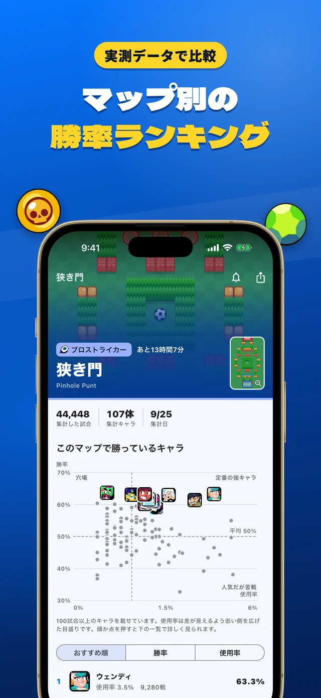
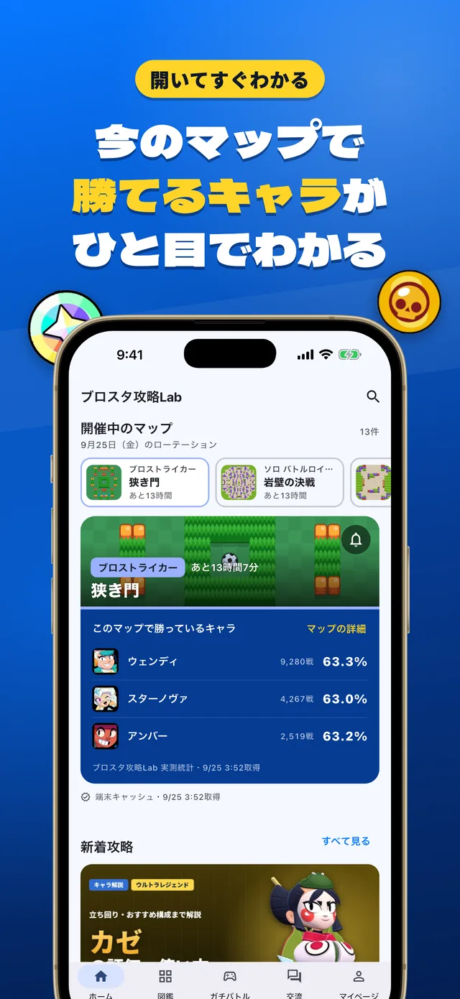
書いて、つくって、届ける。
中学生で始めた攻略メディアは、累計1,900万PV。いまはアプリもつくっています。
慶應義塾大学 理工学部 3年 ／ 株式会社Technophere 代表
2021年、同じゲームで困っている誰かに向けて、攻略サイトを書き始めました。2023年8月、高校3年でテクノフィアを立ち上げ、2026年10月に株式会社Technophere として法人化。設計から実装、ストア公開、公開後の改善まで、自分の手で進めます。

慶應義塾湘南藤沢中等部 入学
Gamerch で数種類のゲーム攻略サイトの運営を開始
慶應義塾湘南藤沢高等部 入学
攻略大百科の専属ライター（業務委託）として100記事以上を寄稿
テクノフィア 設立
ドローン空撮を用いた学校紹介ムービー制作で「高等部部長賞」受賞
慶應義塾大学 理工学部 入学
ベンチャー企業「株式会社Taiziii」にてインターン開始
ブロスタ戦略サポートアプリ「BrawlTech」リリース
企業向け Web サイト制作代行サービスを開始
慶應生向けの学習サポートアプリ「KPass」をリリース
Life is Tech にて DXメンターとして活動開始
Life is Tech にて中高生向け iPhone アプリ開発メンターとして活動開始（研修100時間以上）
Google AI 学生アンバサダーに就任
株式会社Technophere 設立（法人化）
慶應義塾大学 理工学部 システムデザイン工学科 3年
ストアで配信しているアプリです。
ブロスタの戦略サポートアプリ
ブロスタ攻略Lab に集まる対戦データから、開催中のマップで勝っているキャラをひと目で表示します。マップ別の勝率、BAN/PICK の補助、戦績分析までひとつに。Flutter で iOS と Android に対応しています。


慶應生の授業と課題をひとつにするアプリ
大学の K-LMS から授業・課題・時間割を取り込み、ひとつの画面にまとめます。締切もひと目で確認できます。2025年12月公開。いまは慶應生の15%以上が使っていて、App Store の評価は 4.5 です。
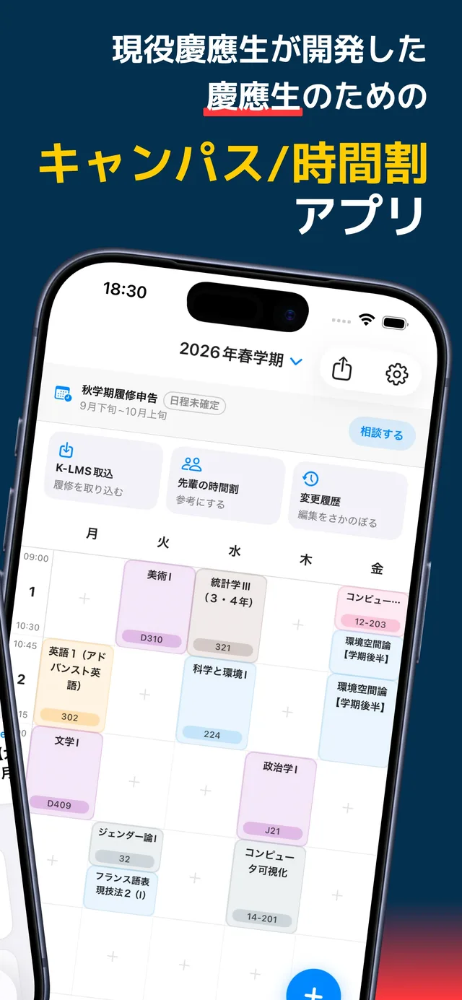
縦と横を同時に撮れる、失敗しないカメラ
シャッター1回で、縦と横の構図を同時に保存。ブレや目つぶりの少ない1枚を、端末の中で選びます。2026年9月公開。
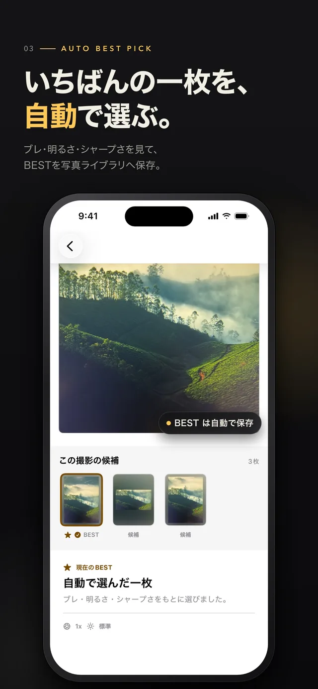
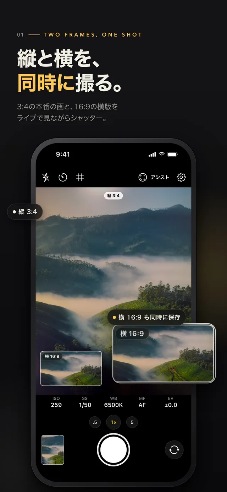
ゲームごとに WordPress を立て、公式 API やゲームデータから図鑑とランキングを自動で更新しています。テクノフィアの主力事業です。
19,044,113PV
累計ページビュー（2023年8月〜2026年9月）
2026年9月24日時点。Google Analytics と Search Console の値です。
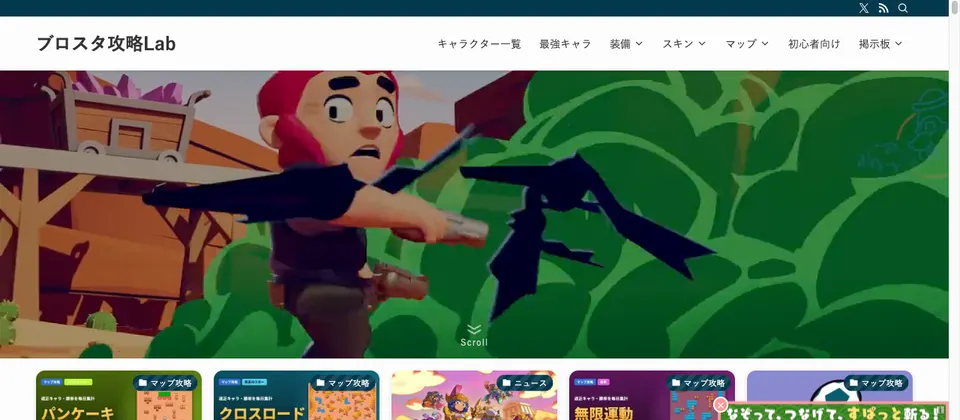
ブロスタ攻略Lab最強キャラランキングと、マップ・モード別の勝率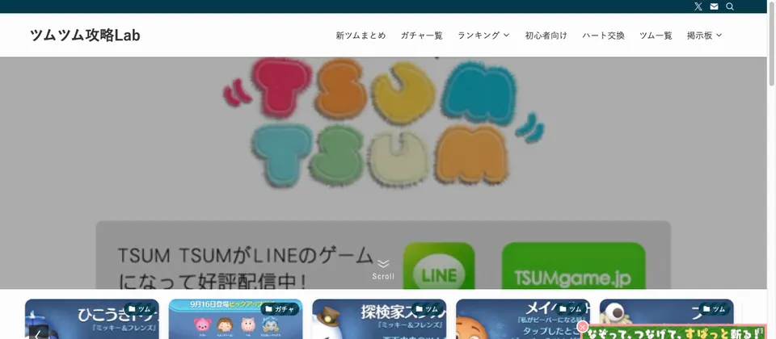
ツムツム攻略Labガチャ情報と、ツムのランキング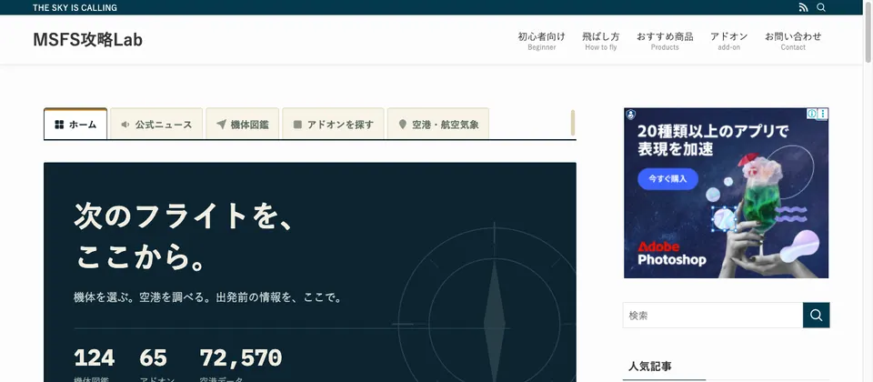
MSFS攻略Lab機体図鑑とアドオン、空港のデータ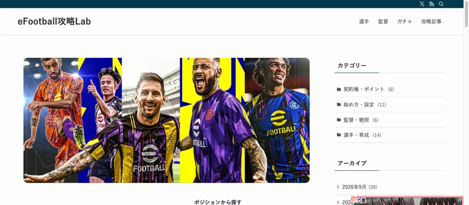
eFootball攻略Lab選手・監督データベースと育成シミュレーター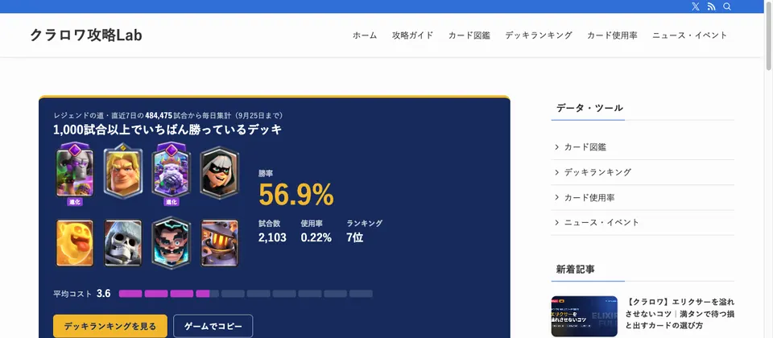
クラロワ攻略Lab公式 API で集計したカード図鑑と、デッキの使用率・勝率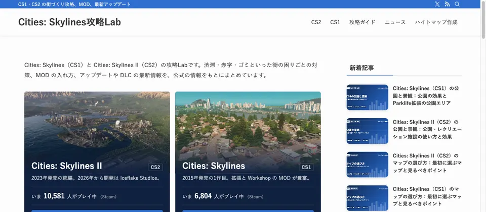
Cities: Skylines攻略Lab都市づくりの攻略ガイドと MOD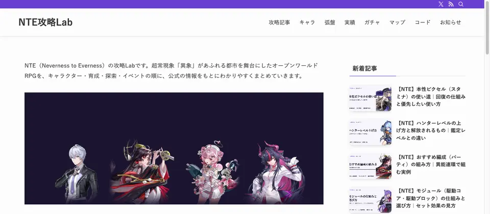
NTE攻略Labキャラ・弧盤の性能とガチャ予定。ゲームデータから自動更新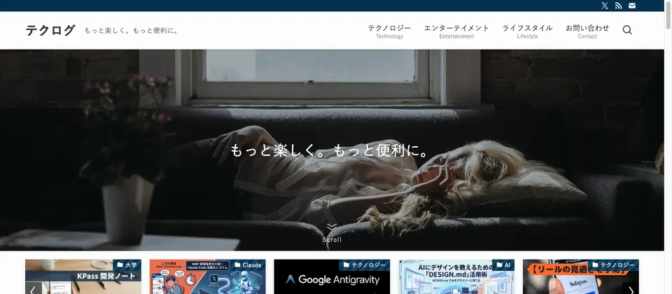
テクログ技術からライフスタイルまで書く総合ブログ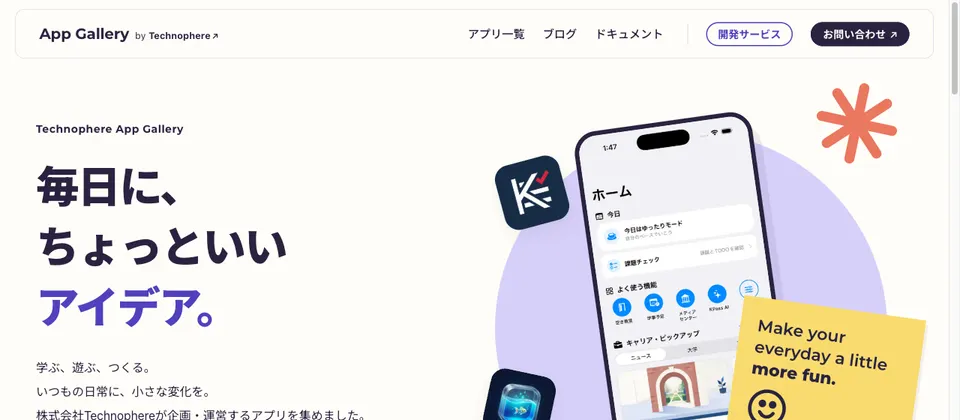
App Galleryテクノフィアのアプリとドキュメントをまとめたギャラリー開発の中心は AI です。Claude Code、Codex、Cursor をプロジェクトごとに使い分け、コードは最後に自分の目で確かめます。アプリは Swift と Flutter、Web は WordPress と Next.js。数字は Search Console と Analytics で毎日見ています。